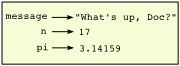
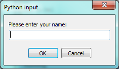

2. Variables, expressions and statements¶
2.1. Values and data types¶
A value is one of the fundamental things — like a letter or a number —
that a program manipulates. The values we have seen so far are 4 (the
result when we added 2 + 2), and "Hello, World!".
These values are classified into different classes, or data types: 4
is an integer, and "Hello, World!" is a string,
so-called because it contains a string of
letters. You (and the interpreter) can identify strings because they are
enclosed in quotation marks.
If you are not sure what class a value falls into, Python has a function called type which can tell you.
>>> type("Hello, World!") <class 'str'> >>> type(17) <class 'int'>
Not surprisingly, strings belong to the class str and integers belong to the class int. Less obviously, numbers with a decimal point belong to a class called float, because these numbers are represented in a format called floating-point. At this stage, you can treat the words class and type interchangeably. We’ll come back to a deeper understanding of what a class is in later chapters.
>>> type(3.2) <class 'float'>
What about values like "17" and "3.2"? They look like numbers, but they
are in quotation marks like strings.
>>> type("17") <class 'str'> >>> type("3.2") <class 'str'>
They’re strings!
Strings in Python can be enclosed in either single quotes (') or double quotes
("), or three of each (''' or """)
>>> type('This is a string.') <class 'str'> >>> type("And so is this.") <class 'str'> >>> type("""and this.""") <class 'str'> >>> type('''and even this...''') <class 'str'>
Double quoted strings can contain single quotes inside them, as in
"Bruce's beard", and single quoted strings can have double quotes
inside them, as in 'The knights who say "Ni!"'.
Strings enclosed with three occurrences of either quote symbol are called triple quoted strings. They can contain either single or double quotes:
>>> print('''"Oh no", she exclaimed, "Ben's bike is broken!"''') "Oh no", she exclaimed, "Ben's bike is broken!" >>>
Triple quoted strings can even span multiple lines:
>>> message = """This message will ... span several ... lines.""" >>> print(message) This message will span several lines. >>>
Python doesn’t care whether you use single or double quotes or the three-of-a-kind quotes to surround your strings: once it has parsed the text of your program or command, the way it stores the value is identical in all cases, and the surrounding quotes are not part of the value. But when the interpreter wants to display a string, it has to decide which quotes to use to make it look like a string.
>>> 'This is a string.' 'This is a string.' >>> """And so is this.""" 'And so is this.'
So the Python language designers usually chose to surround their strings by single quotes. What do think would happen if the string already contained single quotes?
When you type a large integer, you might be tempted to use commas between
groups of three digits, as in 42,000. This is not a legal integer in
Python, but it does mean something else, which is legal:
>>> 42000 42000 >>> 42,000 (42, 0)
Well, that’s not what we expected at all! Because of the comma, Python chose to treat this as a pair of values. We’ll come back to learn about pairs later. But, for the moment, remember not to put commas or spaces in your integers, no matter how big they are. Also revisit what we said in the previous chapter: formal languages are strict, the notation is concise, and even the smallest change might mean something quite different from what you intended.
2.2. Variables¶
One of the most powerful features of a programming language is the ability to manipulate variables. A variable is a name that refers to a value.
The assignment statement gives a value to a variable:
>>> message = "What's up, Doc?" >>> n = 17 >>> pi = 3.14159
This example makes three assignments. The first assigns the string value "What's
up, Doc?" to a variable named message. The second gives the integer
17 to n, and the third assigns the floating-point number 3.14159 to
a variable called pi.
The assignment token, =, should not be confused with equals, which uses
the token ==. The assignment statement binds a name, on the
left-hand side of the operator, to a value, on the right-hand side.
This is why you will get an error if you enter:
>>> 17 = n File "<interactive input>", line 1 SyntaxError: can't assign to literalTip
When reading or writing code, say to yourself “n is assigned 17” or “n gets the value 17”. Don’t say “n equals 17”.
A common way to represent variables on paper is to write the name with an arrow pointing to the variable’s value. This kind of figure is called a state snapshot because it shows what state each of the variables is in at a particular instant in time. (Think of it as the variable’s state of mind). This diagram shows the result of executing the assignment statements:

If you ask the interpreter to evaluate a variable, it will produce the value that is currently linked to the variable:
>>> message 'What's up, Doc?' >>> n 17 >>> pi 3.14159
We use variables in a program to “remember” things, perhaps the current score at the football game. But variables are variable. This means they can change over time, just like the scoreboard at a football game. You can assign a value to a variable, and later assign a different value to the same variable. (This is different from maths. In maths, if you give `x` the value 3, it cannot change to link to a different value half-way through your calculations!)
>>> day = "Thursday" >>> day 'Thursday' >>> day = "Friday" >>> day 'Friday' >>> day = 21 >>> day 21
You’ll notice we changed the value of day three times, and on the third assignment we even
made it refer to a value that was of a different type.
A great deal of programming is about having the computer remember things, e.g. The number of missed calls on your phone, and then arranging to update or change the variable when you miss another call.
2.3. Variable names and keywords¶
Variable names can be arbitrarily long. They can contain both letters and
digits, but they have to begin with a letter or an underscore. Although it is legal to use
uppercase letters, by convention we don’t. If you do, remember that case
matters. Bruce and bruce are different variables.
The underscore character ( _) can appear in a name. It is often used in
names with multiple words, such as my_name or price_of_tea_in_china.
There are some situations in which names beginning with an underscore have special meaning, so a safe rule for beginners is to start all names with a letter.
If you give a variable an illegal name, you get a syntax error:
>>> 76trombones = "big parade" SyntaxError: invalid syntax >>> more$ = 1000000 SyntaxError: invalid syntax >>> class = "Computer Science 101" SyntaxError: invalid syntax
76trombones is illegal because it does not begin with a letter. more$
is illegal because it contains an illegal character, the dollar sign. But
what’s wrong with class?
It turns out that class is one of the Python keywords. Keywords define
the language’s syntax rules and structure, and they cannot be used as variable names.
Python has thirty-something keywords (and every now and again improvements to Python introduce or eliminate one or two):
| and | as | assert | break | class | continue |
| def | del | elif | else | except | exec |
| finally | for | from | global | if | import |
| in | is | lambda | nonlocal | not | or |
| pass | raise | return | try | while | with |
| yield | True | False | None |
You might want to keep this list handy. If the interpreter complains about one of your variable names and you don’t know why, see if it is on this list.
Programmers generally choose names for their variables that are meaningful to the human readers of the program — they help the programmer document, or remember, what the variable is used for.
Caution
Beginners sometimes confuse “meaningful to the human readers” with “meaningful to the computer”.
So they’ll wrongly think that because they’ve called some variable average or pi, it will
somehow magically calculate an average, or magically know that the variable pi should have a
value like 3.14159. No! The computer doesn’t understand what you intend the variable to mean.
So you’ll find some instructors who deliberately don’t choose meaningful
names when they teach beginners — not because we don’t think it is a good habit,
but because we’re trying to reinforce the message that you — the programmer — must
write the program code to calculate the average, and you must write an assignment
statement to give the variable pi the value you want it to have.
2.4. Statements¶
A statement is an instruction that the Python interpreter can execute. We
have only seen the assignment statement so far. Some other kinds of statements that
we’ll see shortly are while statements, for statements, if statements,
and import statements. (There are other kinds too!)
When you type a statement on the command line, Python executes it. Statements don’t produce any result.
2.5. Evaluating expressions¶
An expression is a combination of values, variables, operators, and calls to functions. If you type an expression at the Python prompt, the interpreter evaluates it and displays the result:
>>> 1 + 1 2 >>> len("hello") 5
In this example len is a built-in Python function that returns the number of characters in a string.
We’ve previously seen the print and the type functions, so this is our third example of a function!
The evaluation of an expression produces a value, which is why expressions can appear on the right hand side of assignment statements. A value all by itself is a simple expression, and so is a variable.
>>> 17 17 >>> y = 3.14 >>> x = len("hello") >>> x 5 >>> y 3.14
2.6. Operators and operands¶
Operators are special tokens that represent computations like addition, multiplication and division. The values the operator uses are called operands.
The following are all legal Python expressions whose meaning is more or less clear:
20+32 hour-1 hour*60+minute minute/60 5**2 (5+9)*(15-7)
The tokens +, -, and *, and the use of parenthesis for grouping,
mean in Python what they mean in mathematics. The asterisk (*) is the
token for multiplication, and ** is the token for exponentiation.
>>> 2 ** 3 8 >>> 3 ** 2 9
When a variable name appears in the place of an operand, it is replaced with its value before the operation is performed.
Addition, subtraction, multiplication, and exponentiation all do what you expect.
Example: so let us convert 645 minutes into hours:
>>> minutes = 645 >>> hours = minutes / 60 >>> hours 10.75
Oops! In Python 3, the division operator / always yields a floating point result.
What we might have wanted to know was how many whole hours there are, and how many minutes remain.
Python gives us two different flavors of the division operator.
The second, called floor division uses the token //.
Its result is always a whole number — and if it has to adjust the number it always
moves it to the left on the number line. So 6 // 4 yields 1, but -6 // 4 might surprise you!
>>> 7 / 4 1.75 >>> 7 // 4 1 >>> minutes = 645 >>> hours = minutes // 60 >>> hours 10
Take care that you choose the correct flavor of the division operator. If you’re working with expressions where you need floating point values, use the division operator that does the division accurately.
2.7. Type converter functions¶
Here we’ll look at three more Python functions, int, float and str, which will (attempt to)
convert their arguments into types int, float and str respectively. We call these
type converter functions.
The int function can take a floating point number or a string, and turn
it into an int. For floating point numbers, it discards the decimal portion
of the number — a process we call truncation towards zero on
the number line. Let us see this in action:
>>> int(3.14) 3 >>> int(3.9999) # This doesn't round to the closest int! 3 >>> int(3.0) 3 >>> int(-3.999) # Note that the result is closer to zero -3 >>> int(minutes / 60) 10 >>> int("2345") # Parse a string to produce an int 2345 >>> int(17) # It even works if arg is already an int 17 >>> int("23 bottles")
This last case doesn’t look like a number — what do we expect?
Traceback (most recent call last): File "<interactive input>", line 1, in <module> ValueError: invalid literal for int() with base 10: '23 bottles'
The type converter float can turn an integer, a float, or a syntactically legal
string into a float:
>>> float(17) 17.0 >>> float("123.45") 123.45
The type converter str turns its argument into a string:
>>> str(17) '17' >>> str(123.45) '123.45'
2.8. Order of operations¶
When more than one operator appears in an expression, the order of evaluation depends on the rules of precedence. Python follows the same precedence rules for its mathematical operators that mathematics does. The acronym PEMDAS is a useful way to remember the order of operations:
Parentheses have the highest precedence and can be used to force an expression to evaluate in the order you want. Since expressions in parentheses are evaluated first,
2 * (3-1)is 4, and(1+1)**(5-2)is 8. You can also use parentheses to make an expression easier to read, as in(minute * 100) / 60, even though it doesn’t change the result.Exponentiation has the next highest precedence, so
2**1+1is 3 and not 4, and3*1**3is 3 and not 27.Multiplication and both Division operators have the same precedence, which is higher than Addition and Subtraction, which also have the same precedence. So
2*3-1yields 5 rather than 4, and5-2*2is 1, not 6.Operators with the same precedence are evaluated from left-to-right. In algebra we say they are left-associative. So in the expression
6-3+2, the subtraction happens first, yielding 3. We then add 2 to get the result 5. If the operations had been evaluated from right to left, the result would have been6-(3+2), which is 1. (The acronym PEDMAS could mislead you to thinking that division has higher precedence than multiplication, and addition is done ahead of subtraction - don’t be misled. Subtraction and addition are at the same precedence, and the left-to-right rule applies.)Due to some historical quirk, an exception to the left-to-right left-associative rule is the exponentiation operator
**, so a useful hint is to always use parentheses to force exactly the order you want when exponentiation is involved:>>> 2 ** 3 ** 2 # The right-most ** operator gets done first! 512 >>> (2 ** 3) ** 2 # Use parentheses to force the order you want! 64
The immediate mode command prompt of Python is great for exploring and experimenting with expressions like this.
2.9. Operations on strings¶
In general, you cannot perform mathematical operations on strings, even if the
strings look like numbers. The following are illegal (assuming that message
has type string):
>>> message - 1 # Error >>> "Hello" / 123 # Error >>> message * "Hello" # Error >>> "15" + 2 # Error
Interestingly, the + operator does work with strings, but for strings,
the + operator represents concatenation, not addition.
Concatenation means joining the two operands by linking them end-to-end. For example:
The output of this program is banana nut bread. The space before the word
nut is part of the string, and is necessary to produce the space between
the concatenated strings.
The * operator also works on strings; it performs repetition. For example,
'Fun'*3 is 'FunFunFun'. One of the operands has to be a string; the
other has to be an integer.
On one hand, this interpretation of + and * makes sense by analogy with
addition and multiplication. Just as 4*3 is equivalent to 4+4+4, we
expect "Fun"*3 to be the same as "Fun"+"Fun"+"Fun", and it is. On the
other hand, there is a significant way in which string concatenation and
repetition are different from integer addition and multiplication. Can you
think of a property that addition and multiplication have that string
concatenation and repetition do not?
2.10. Input¶
There is a built-in function in Python for getting input from the user:
A sample run of this script in PyScripter would pop up a dialog window like this:

The user of the program can enter the name and click OK, and when this happens
the text that has been entered is returned from the input function, and in this
case assigned to the variable n.
Even if you asked the user to enter their age, you would get back a string like "17".
It would be your job, as the programmer, to convert that string into a int or a float,
using the int or float converter functions we saw earlier.
2.11. Composition¶
So far, we have looked at the elements of a program — variables, expressions, statements, and function calls — in isolation, without talking about how to combine them.
One of the most useful features of programming languages is their ability to take small building blocks and compose them into larger chunks.
For example, we know how to get the user to enter some input, we know how to convert the string we get into a float, we know how to write a complex expression, and we know how to print values. Let’s put these together in a small four-step program that asks the user to input a value for the radius of a circle, and then computes the area of the circle from the formula

Firstly, we’ll do the four steps one at a time:
Now let’s compose the first two lines into a single line of code, and compose the second two lines into another line of code.
If we really wanted to be tricky, we could write it all in one statement:
Such compact code may not be most understandable for humans, but it does illustrate how we can compose bigger chunks from our building blocks.
If you’re ever in doubt about whether to compose code or fragment it into smaller steps, try to make it as simple as you can for the human to follow. My choice would be the first case above, with four separate steps.
2.12. The modulus operator¶
The modulus operator works on integers (and integer expressions) and gives
the remainder when the first number is divided by the second. In Python, the
modulus operator is a percent sign (%). The syntax is the same as for other
operators. It has the same precedence as the multiplication operator.
>>> q = 7 // 3 # This is integer division operator >>> print(q) 2 >>> r = 7 % 3 >>> print(r) 1
So 7 divided by 3 is 2 with a remainder of 1.
The modulus operator turns out to be surprisingly useful. For example, you can
check whether one number is divisible by another—if x % y is zero, then
x is divisible by y.
Also, you can extract the right-most digit or digits from a number. For
example, x % 10 yields the right-most digit of x (in base 10).
Similarly x % 100 yields the last two digits.
It is also extremely useful for doing conversions, say from seconds, to hours, minutes and seconds. So let’s write a program to ask the user to enter some seconds, and we’ll convert them into hours, minutes, and remaining seconds.
2.13. Glossary¶
- assignment statement
A statement that assigns a value to a name (variable). To the left of the assignment operator,
=, is a name. To the right of the assignment token is an expression which is evaluated by the Python interpreter and then assigned to the name. The difference between the left and right hand sides of the assignment statement is often confusing to new programmers. In the following assignment:n = n + 1
nplays a very different role on each side of the=. On the right it is a value and makes up part of the expression which will be evaluated by the Python interpreter before assigning it to the name on the left.- assignment token
=is Python’s assignment token. Do not confuse it with equals, which is an operator for comparing values.- composition
- The ability to combine simple expressions and statements into compound statements and expressions in order to represent complex computations concisely.
- concatenate
- To join two strings end-to-end.
- data type
- A set of values. The type of a value determines how it can be used in
expressions. So far, the types you have seen are integers (
int), floating-point numbers (float), and strings (str). - evaluate
- To simplify an expression by performing the operations in order to yield a single value.
- expression
- A combination of variables, operators, and values that represents a single result value.
- float
- A Python data type which stores floating-point numbers.
Floating-point numbers are stored internally in two parts: a base and
an exponent. When printed in the standard format, they look like
decimal numbers. Beware of rounding errors when you use
floats, and remember that they are only approximate values. - floor division
- An operator (denoted by the token
//) that divides one number by another and yields an integer, or, if the result is not already an integer, it yields the next smallest integer. - int
- A Python data type that holds positive and negative whole numbers.
- keyword
- A reserved word that is used by the compiler to parse programs; you
cannot use keywords like
if,def, andwhileas variable names. - modulus operator
- An operator, denoted with a percent sign (
%), that works on integers and yields the remainder when one number is divided by another. - operand
- One of the values on which an operator operates.
- operator
- A special symbol that represents a simple computation like addition, multiplication, or string concatenation.
- rules of precedence
- The set of rules governing the order in which expressions involving multiple operators and operands are evaluated.
- state snapshot
- A graphical representation of a set of variables and the values to which they refer, taken at a particular instant during the program’s execution.
- statement
- An instruction that the Python interpreter can execute. So far we have
only seen the assignment statement, but we will soon meet the
importstatement and theforstatement. - str
- A Python data type that holds a string of characters.
- value
- A number or string (or other things to be named later) that can be stored in a variable or computed in an expression.
- variable
- A name that refers to a value.
- variable name
- A name given to a variable. Variable names in Python consist of a sequence of letters (a..z, A..Z, and _) and digits (0..9) that begins with a letter. In best programming practice, variable names should be chosen so that they describe their use in the program, making the program self documenting.
2.14. Exercises¶
Take the sentence: All work and no play makes Jack a dull boy. Store each word in a separate variable, then print out the sentence on one line using
print.Add parenthesis to the expression
6 * 1 - 2to change its value from 4 to -6.Place a comment before a line of code that previously worked, and record what happens when you rerun the program.
Start the Python interpreter and enter
bruce + 4at the prompt. This will give you an error:NameError: name 'bruce' is not defined
Assign a value to
bruceso thatbruce + 4evaluates to10.The formula for computing the final amount if one is earning compound interest is given on Wikipedia as

Write a Python program that assigns the principal amount of $10000 to variable P, assign to n the value 12, and assign to r the interest rate of 8%. Then have the program prompt the user for the number of years t that the money will be compounded for. Calculate and print the final amount after t years.
Evaluate the following numerical expressions in your head, then use the Python interpreter to check your results:
>>> 5 % 2>>> 9 % 5>>> 15 % 12>>> 12 % 15>>> 6 % 6>>> 0 % 7>>> 7 % 0
What happened with the last example? Why? If you were able to correctly anticipate the computer’s response in all but the last one, it is time to move on. If not, take time now to make up examples of your own. Explore the modulus operator until you are confident you understand how it works.
You look at the clock and it is exactly 2pm. You set an alarm to go off in 51 hours. At what time does the alarm go off? (Hint: you could count on your fingers, but this is not what we’re after. If you are tempted to count on your fingers, change the 51 to 5100.)
Write a Python program to solve the general version of the above problem. Ask the user for the time now (in hours), and ask for the number of hours to wait. Your program should output what the time will be on the clock when the alarm goes off.